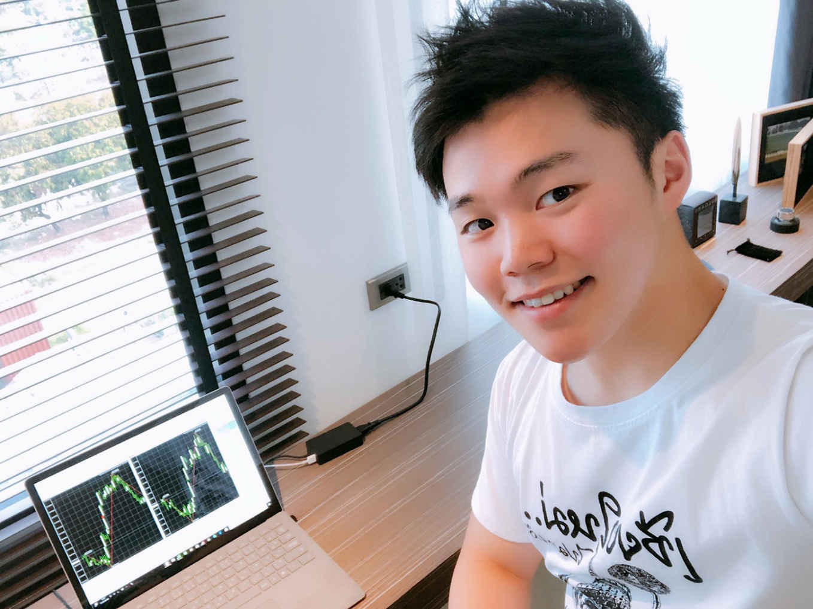

| 一瞬の出会いから最高の人生を創りだす秘訣 | |
| 岸本佳也 | |
| Eagle Publishing (2018) | |
岸本佳也
ひとりのサラリーマンが生まれたのは、18
歳のときだった。
それと引きかえに、18
歳の若者がひとり、死んだ。
サラリーマンという名の「棺桶」に身を横たえたとき、僕は本当に、死んでしまったんだ。
このままで、いいんだろうか――。
「俺だって若いときはよぉ、平凡な人生なんてイヤだって思ってたんだよ」
ある金曜の夜。連れて行かれた居酒屋のカウンターで、顔を赤らめた上司が言った。
「だけどなぁ、いざ世の中に出てみると、分かるわけよ。若さだけで突っ走るヤツなんて、しょせん頭が悪いんだって。
結局は人生、堅実が一番。平凡が一番なんだよ」
ロマンスグレーのカツラがトレードマークの彼は、58
歳で悲願の部長職についた苦労人だ。
いつもは営業成績のグラフを見てイライラしているが、酒が入るとすぐに陽気になる。
「平凡な人生って言われるかもしれねぇがよぉ、俺はこれでも、カカアに子供ふたりを何十年と食わせてきたんだよ。そんでもって、子供も大学まで上げたんだ。
ここまでの苦労はハンパじゃなかったわけよ。なぁ岸本、分かる？」
ロレツの回らない口調で語る部長は、僕の同意を求めるように、サラリーマン人生の苦労を語った。
といっても、決して会社への不満を口にはしない。その言葉の端々には、むしろ彼の達成感がにじみ出ている。
たしかに彼は、世間的に見ればそれなりの成功者にカテゴライズされるのだろう。
そこそこの会社でそこそこの給料をもらい、定年間際とはいえ部長にまでなった。つまり彼は、サラリーマンを立派に勤め上げ、家族を養ってきたという「自分の物語」に、酔いしれていたのだ。
その自己肯定感を、僕は否定しない。たとえ平凡でも、何十年とサラリーマン生活を続け、競争を生き抜き、ときには会社の冷たい仕打ちにも耐えて部長職にまでのぼりつめる......なかなか大変なことだろう。
しかし......それでも僕は思ったのだ。自分もこの会社であと30
年もすごせば、目の前でクダを巻く部長のようになるのだろうかと。
このままで、いいんだろうか――。
赤ら顔の部長は、僕の肩に手を回して続けた。
「この会社にいりゃ、定年まで安泰。老後も安泰だよ。
なぁ岸本。お前もこの会社でしんどいこともあるだろうけどよぉ、成せぬ忍耐、成すが忍耐だよ。定年まで勤め上げてりゃ、老後の年金も安泰だ。それがいい。それが幸せなんだ」
むせかえるほどの酒臭さに、中年男ならではの体臭とオーデコロン。
そんな部長の匂いに、僕はすっかり食欲をなくしてしまった。
それはさておき、部長の言うことにも一理あるのはたしかだ。今の会社はそれなりの給料を保証してくれているし、業績も安定していた。サラリーマンとして働くには、悪い環境ではない。
だが、目に映る58
歳の男の姿に、僕は自分の求める未来像を見出せなかったのだ。
僕の冷たい視線もお構いなしに、部長はまた押し付けがましい人生訓を語った。
「よくいるだろ？ 若いクセによぉ、『俺は会社の雇われ人じゃ終わらない』なんて言って、夢だのなんだのってわめいて、金も無いのに事業起こして失敗するヤツがよぉ。
でもな、人生ってのは結局、安定第一なんだよ。最終的に見りゃ、平凡なサラリーマンが圧倒的に勝ってるじゃないか」
それはそうなのかもしれない。部長の言う事を、頭から否定する気はない。
「なぁ岸本。頭が悪いヤツがよぉ、若さと勢いだけで起業だなんだってやってもよぉ、しょせん上手くいきやしねぇ。頭が悪いのに、カネなんてどうやって稼ぐんだよ。無理だろ？
なぁ岸本。人間、平凡がいいんだ。平凡が一番だよ。この会社は、お前を守ってくれる」
部長の話す言葉に、僕も頭では納得していた。
しかし心の奥底で、どうしても彼のような「サラリーマン道」を歩いていく気にはなれなかった。中年管理職の見本である部長の言葉には、僕の心を動かすものが何もなかったのだ。
ほどなく飲み会はお開きとなった。
すっかり泥酔し、ひとりで歩けなくなった部長を支え、最寄の駅まで送っていった。
彼を電車に乗せた後、僕は駅を出て、さっきの居酒屋を振り返った。
店頭の大きな赤ちょうちんが、仕事帰りの企業戦士たちの目印になっている。
駅前で光り続けるそれは、なんだかとても物寂しく、ちっぽけなサラリーマン人生の墓標のように見えた。泥酔してクダを巻く部長の姿が目に浮かぶ。僕はサラリーマンとしての前途に、暗いものを感じざるを得なかった。
僕はふと、スマホを手に取った。
この日のランチタイム、僕はスマホをいじるうちに、インターネットである「動画」に出会っていた。
それは一見インチキくさいようでいて、僕の人生を変えるきっかけになりそうな、未知の予感を与えるものだった。
なにしろその動画の主は、ついさっきまで聞かされた部長の説教とは、正反対の事を語っていたからだ。
動画の冒頭には、こうあった。
頭が悪いから、成功できるんです。
何気ない言葉のようだが、僕の心を強く揺さぶるものがあった。
部長に言われるまでも無く、頭の悪いバカは、基本的には成功と縁がない存在のはずだ。
だからこそ僕のような平凡なバカは、たとえ不満があろうとも、会社にしがみついて生きていくしかない......そう思っていた。
だが、動画の主は言うのである。「頭が悪いから、成功できる」と。
だれがこんな事を言っているのかと、僕はもう一度、動画の投稿者の名前に目をやった。
綾小路 光
あやのこうじ......誰だこの人？ 聞いたこともないけど。
これがスマホを介した、運命の男との出会いだった。
家に帰った僕は、コンビニで買ってきた弁当を食べながら、スマホの動画に目をやった。
とにかく僕にとって、動画の主――綾小路光の言う事は意味不明であり、同時に新鮮な考え方でもあった。
「頭が悪いから成功できる」とは、どういう意味なのだろうか？
動画で、綾小路という男はこう語り始めた。
「だれだって頭が良くなりたいだろうし、賢くなるのが成功への近道だと思っているでしょう。しかしそれは半分正解で、半分間違っているんです。賢いことが、逆に成功への障害になることがあります」
どういうことなのか？ 思わず弁当を食べるのをやめ、動画を見つめる僕を待っていたかのように、綾小路という男は笑顔で語り続けた。
「賢い人は、なまじ物事を知っていて、思考力もあるだけに、返って発想が『守り』に入っちゃう事があるんです。だから行動すべきところで行動できなかったり、思い切った決断ができなくなる。
つまり頭が良い人というのは、その知力と引きかえに、勇気や行動力を失ってしまうことが多いんです」
変なことを言っている。本当に変な理屈だ。
バカバカしくて、すぐに動画を消そうと思った。
しかし綾小路の笑顔と、妙にゆったりとしたたたずまいに、僕はなんとなく引きずられるような心地がしたのだった。
綾小路は続ける。
「成功をつかむためには、行動する勇気が必要です。しかし頭の良い人はその知力が逆に足かせとなって、思い切った行動・決断ができなくなる。
だからこそ、僕は声を大にして言いたいんです。頭の悪い人こそが、実は賢い人よりも、成功に近いところにいるんだと」
しばしの間、僕は綾小路の話を呆然として聞いていた。
えっ？ なんなんだろう、この話。屁理屈なんじゃないか――。
そうだ、こんなの絶対に屁理屈だ。
今度こそ動画を切ろうと思った。
しかし綾小路はそんな僕をさとすように、柔らかな口調で続けるのである。
「要は『リスク』というものにどう向き合うか......という話です。
頭が良い人は、物事をいろんな角度から見ることができるため、なにをやるにおいてもリスクを先に考えてしまう。その結果として、行動や決断にブレーキがかかってしまうんです」
「で、あるならば......むしろ頭の悪い人の方が、ためらわずに行動・決断できるということになる。
余計な知恵で、余計なことを考えなくて済むから、ブレーキをかけることなく、アクセルをグッと踏み込めるんです。
しつこいようだけど、もう一度言います。頭の悪い人こそが、成功の近くにいるんです」
綾小路の言うことは、なんとも妙な理屈だった。僕の理性は、彼をペテン師としか感じることができなかった。
しかしその一方、心の奥底で、この理屈に納得している自分がいた。
頭がいいゆえに、リスクを考え守りに入り、勇気ある挑戦ができなくなる――。
頭が悪い方が、常に攻めの姿勢で挑戦を続け、成功に近づくことができる――。
本当なのか？ この男の言うことは......。
だったらバカな自分でも、成功をつかめなきゃウソじゃないか......。
そんな僕の疑問を見透かしているかのように、綾小路は淡々と話を続けた。
「このようにお話しすると、動画を見てくださっているあなたは、きっとこう思うことでしょう。
『頭が悪い方が成功するというなら、世界中のバカがみんな成功してないとおかしいじゃないか！』
たしかにそうです。しかし成功はだれでも手にできるものではなく、ある条件を満たしている必要があります。
これまでなにをやっても上手くいかなかった人が、一念発起して成功をつかむには、これまでの思考法を捨てる必要があります」
思考法を......捨てる......。
「あなたがこれまで、なにをやっても成功をつかめなかったのだとしたら......あなた自身のベースにある考え方を捨てなくてはいけません。
つまり、あなたの行動にしばりをかけている『敗者の思考』、言いかえれば『負けパターンの思考法』を、すべて捨てることが必要なのです」
敗者の思考を、捨てる――。
その言葉に、僕は思わず釘づけとなった。
ちっぽけなスマホの動画で語る綾小路は、決してテレビに出てくるような有名人ではない。
だが彼の言葉は、なぜだろうか......僕の未来を大きく揺るがすような、そんな予感に満ちあふれていたのだ。
「成功できない多くの人に共通する『敗者の思考』が、３つあります。
まず『１．リサーチをしない』
こと。次に『２．先生に質問しない』
こと。そして最後のひとつが『３．努力すれば報われるという思い込み』
です」
どこまでも穏やかな口調で、しかし自信たっぷりに、綾小路は語る。
「『１．リサーチをしない』というのは、なにかを成し遂げたいときに、成功している人の事例に学んでいないという問題点です。
たとえば野球が上手くなりたいとして、ただやみくもにバットを振っているだけで、上手くなるでしょうか？ おそらくそれだけでは、いつまでたっても上達しないと思います。
ボールにバットを当てるには、どう構えて、どう球を見て、どんな風にスイングするか、上手な人を研究し、参考にしなくてはいけません」
「ここまで言うと、当たり前のことですよね？ 別に頭が良くなくても、簡単に克服できそうですよね？
でも......この『簡単』で『当たり前』のリサーチすらやらない人がたくさんいる。そうして、世の中は失敗者であふれかえっているわけです」
綾小路が言っていることは、たしかに当然のことである。しかし僕は正直、痛いところを突かれた気がした。
学生時代も、社会人になった後も、僕はやりたいことがたくさんあった。それなりに頑張ってもきた。
しかし......「自分の先を行く成功者」に学ぶことは、ほとんどしていなかったように思う。
その結果として、いまの僕は平凡なサラリーマン人生を歩んでいるのだろうか。
そして動画の綾小路は、さらに「敗者の思考」について話を続けた。
「次の『２．先生に質問しないこと』というのは、１．とも関係してくるんですけど......。
１．では、成功者を研究して、その成功パターンを参考にしようとお話しました。
２．で言いたいのは、外から成功者をながめているだけじゃなくて、実際に話を聞きにいこうってことです。
たとえば、学生時代に勉強が良くできた人は、ほぼ例外なく『先生によく質問』しているはずです。ここでの『先生』というのは、学校や塾の先生ばかりではありません。自分より優秀な先輩や同級生もふくみます」
「つまり『その分野で成功している人』を、自分の『先生』だと思って、なんでも質問してみればいいんです。
成功者に質問することが、成功へのエッセンスを吸収する近道なんです。これは受験勉強に限らず、ビジネスでもなんでも同じことです」
これまた僕にとっては、耳の痛い話だった。それでも綾小路の柔らかな語り口は、なんだか不思議な包容力があって、僕の気持ちを少しずつ前向きにしてくれた。
そして綾小路は、「敗者の思考」の３つ目について話しはじめた。
「ひとりよがりな思い込みにとらわれていては、人間は必ず失敗します。特に多いのは『３．努力すれば報われるという思い込み』です。
たとえばあなたが、車で東京から大阪へ行くとしましょう。普通はまず――ルートは色々ありますが――東名高速で名古屋方面に向かって、そのあと名神高速に進みますよね。
ところが途中で道を間違えて、東海北陸道に入ってしまったらどうでしょう？ どんなに頑張って車を運転しても、大阪には着きません。大阪どころか、岐阜を通って富山に出てしまいますよね（笑）」
「なにが言いたいのかというと......どんなに頑張ったところで、『努力の方向性』を間違えてしまっていては、目的地（＝成功）にはたどり着けないってことです。
だからあえて厳しく言うんですが、『努力すれば報われるというのは、思い込み』なんです。特に日本人はなまじ性格がマジメなものだから、『努力という自己満足』におちいっている人があまりに多い。だからやっぱり、世の中は失敗者であふれかえることになるんですよ」
理路整然と語る綾小路に、僕は内心うなった。
彼の話は、当たり前のことを言っているように聞こえるかもしれない。
しかし綾小路が指摘する「敗者の思考」は、すべてが僕に当てはまる事柄だったのである。

小鳥のさえずりが、土曜日の朝を告げた。
カーテンの隙間から差し込む光。
よく眠れないまま朝をむかえた僕は、なんだかじっとしていられない心地になって、ベッドからおりた。
時計は午前９時27
分を指していた。
僕は土曜日が好きだ。
けれど、なぜ土曜が好きなのか、その理由を深く考えたことはなかった。
しかし、綾小路という男の動画を見て、ひとつの答えが見えた。
土曜日が楽しいのは、会社に行かなくてもいいからだ。
つまり僕は、サラリーマンの枠組みのなかで生きていながら、会社に行くことを苦痛に感じているのだ。
このまま会社勤めを続けることに、もやもやとした疑念が浮かんできた。
朝のコーヒーを入れて、カップに口をつける。それでも心は落ち着かない。
あの動画のせいだ――。
昨日の夜、綾小路の動画を見て以来、胸騒ぎがとまらなくなった。
将来への不安、サラリーマン人生への疑問、「このままじゃいけない」という想いが、僕のなかで一気に渦を巻きはじめたのだ。
僕は目覚めのコーヒーもそこそこに、スマホへ手を伸ばした。
動画のページを開くと、綾小路は僕を待っていたかのように、やわらかな笑顔で語りだしたのだ。
「ここまで、成功できない人の多くに共通している『敗者の思考』についてお話ししました。敗者の思考法にとらわれている限り、どんなに努力しようが成功はつかめません。
しかし逆に言うと、敗者の思考を捨て去ることができれば、頭が悪くても成功できる......いや、むしろ頭が悪いからこそ、ダイナミックな決断力・行動力で、スケールの大きな人生を歩める可能性もあるんです」
綾小路の言葉は、会社の上司の言うことと全く逆の内容だった。
もちろん、見ず知らずの人間の話を真に受けるのは危険だ。それでも僕は、この男の言葉にこそ、人生を変えるカギがあるような気がしていた。
「今回はさらに話を進めて、あなたが身につけるべき『勝者の思考』について、お話ししたいと思います。
先にお話しした『敗者の思考』が、捨て去るべき負け犬の思考法だとすれば、いまからお話しするのは『勝ち組の思考法』です。
成功者の多くに共通している思考法なので、必ず身につけておきたい考え方なのです」
綾小路の話では、この「勝者の思考」というのも３つあるとのことだった。
「成功者の多くに共通している『勝者の思考』は、以下の３つです。
まず『１．ライバルは少ないと認識』
すること。次に『２．攻略法を大量にインプット』
すること。そして最後のひとつが『３．成果物を大量にアウトプット』
することです」
ここまで聞いても、なんのことだかよく分からない。僕はいつしか湯気を立てるコーヒーもそのままに、綾小路の話に聞き入った。
「まず勝つための思考法の第一歩として、『１．ライバルは少ないと認識』して欲しいんです。ホント、あなたが思っている以上に、実はライバルというのは少ない。
たとえば大学受験で言うと、東京大学に合格する人は３０００人に１人だと言われています。こういうデータを見ると『ああ、東大なんて無理だわ』と思ってしまうかもしれない。
でも、よく考えてください。受験生全体のなかで『真剣に』東大に行きたいと思っている人なんて、どれだけいるんでしょうか？ おそらく３０００人もいないでしょう。仮にいたとしても、大半が途中であきらめて、他の大学を受験するわけです」
「これはビジネスに関しても同じことが言えて、何が何でも成功するって覚悟を持った人は案外少なく、大半の人が途中であきらめてしまう......。だから、あなたの競争相手というのは、案外少ないのです」
綾小路は熱意を持って語る。
「要は、プラス思考が大切だということです。たしかに競争社会の現実というのは厳しく、一見すると競争相手の多さに圧倒されてしまうかもしれない。
しかしあなたに立ちはだかる競争相手の大半が、見かけだおしなのです。その大半が途中であきらめてしまう人たちだからです。
つまり、最後まであきらめることなく、プラス思考で目標に立ち向かいさえすれば、それだけであなたは優位に立てることになります。あなたが思っている以上に、本当のライバルというのは少ないんです」
この話には、正直僕にも思い当たることがある。
学校でも、会社でも、優秀なヤツが、なぜか途中で目標をあきらめてしまうことがあった。
なまじ優秀なだけに、高い目標を掲げてしまい、途中で絶望してしまうのかもしれないが......。
どんなに可能性を秘めていても、途中で投げ出してしまったら、得られる果実はゼロだ。
つまりは平凡な資質だろうと、最後までプラス思考で取り組めば、途中であきらめる「ひ弱な秀才クン」よりは、いい成果を残せるということだろう。
「次に、『２．攻略法を大量にインプット』すべしというのは、とにかく成功している人に接近して、そのやり方や思考法を徹底的に盗むべきだということです。
個人的なことですが、私は公認会計士の受験をしたときに、３００人くらいの合格者にひたすら話を聞きました。すると意外なことに、大学在学中に合格する人は、大学に通わずに試験勉強に専念しているという傾向が見えてきました。この法則にしたがって、私も大学に通わずに勉強し、首尾よく公認会計士の資格を取れたのです」
「これはビジネスでも同じことが言えます。成功をつかみたかったら、とにかく自分の先を行く成功者に近づいて、そのノウハウを徹底的に盗み、マネをすることが大事です。すでに成功している人をお手本にして、とことんマネをしてみることが、成功への第一歩なんです。成功する人は、成功するための『法則』を知っているんです」
なるほど、こういうことか――。
ここまで聞いて、僕はようやく「攻略法をインプットする」ということの意味を、理解できた。
綾小路の言う攻略法とは「成功者だけが持つノウハウ」のことだ。成功するには、このノウハウを仕入れることが欠かせない。だからこそ、成功者に密着して、そのやり方や思考法を徹底的に学ぶことが必要ということだろう。
この「インプット」という考え方に続けて、綾小路は「アウトプット」という概念についても語った。
「『３．成果物を大量にアウトプット』というのは、成功者の正しいノウハウを頭に入れたら（インプット）、それをただ覚えておくだけでなく、実際に行動に反映させよう（アウトプット）ということです。
なぜなら、せっかく成功者のノウハウを手に入れても、実戦で使ってみないことには身につかないからです。だから仕事でも勉強でも、成功者のノウハウを仕入れたら、すぐに使ってみてください。そうやって実戦をこなすうちに、成功者と自分の差を認識することができるからです。ノウハウを理屈で終わらせるのではなく、実戦で応用してこそ、あなた自身が成功に近づくことになります」
「以上３つが『勝者の思考』です。別の言葉で言いかえるなら『１．プラス思考』『２．成功者のノウハウを盗む』『３．そのノウハウを実戦で試してみる』というところですね。この『勝者の思考』を徹底して自分に植えつけて、日々の行動を変えていくことが、成功への道です」
こうして綾小路は、３つの「勝者の思考」を淡々と語り終えた。
決して感情をたかぶらせることなく、おだやかに話し続ける彼だが、そのやわらかい口調には説得力があった。
人生を、変えるしかない――。
僕は生まれて初めて、心からそう願った。
それは、１週間でもっとも楽しい土曜日に、この動画を見たからかもしれない。
土曜日が楽しいということは、平日がつまらないということだ。
そう。僕にとってのサラリーマン生活は、つまらなくて、つまらなくて、つまらなくて、もう気がおかしくなりそうなほどの苦痛だったのだ。
綾小路の動画は、僕が自ら封じ込めていた心の叫びを、解き放ってしまったのだ。
こんな気持ちになっては、もう後には引けない。
この先ずっと、会社勤めという牢獄のなかに、自分を押し込め続けることは、もうできそうにない。
だからこそ、僕は思ったのだ。
綾小路の考え方を、成功へのノウハウを、もっと聞きたい――。
そう願った僕の目に、スマホの画面はひとつのアドレスを見せてくれた。
それは動画の下にある、綾小路のＬＩＮＥのＩＤだった。
綾小路 光 公式ＬＩＮＥＩＤ：＠
※※※※※※（＠
をお忘れなく）
「ＬＩＮＥかぁ......」
僕は少し、ためらった。ＬＩＮＥのアカウントは持っているが、プライベートで知人とやり取りする以外に使ったことはない。ＬＩＮＥにビジネスを持ち込むという発想がなかったため、思わず躊躇してしまったのだ。
しかし......綾小路という男のやわらかな笑みが、僕の警戒心を溶かしていった。
彼は「ビジネス」や「成功法則」といった堅い話をしている割には、不思議なほど口調がやさしく、振る舞いも穏やかだったのだ。
金もうけ一辺倒の人間じゃない......この男には、人をひきつける魅力がある――。
そう思った僕は、綾小路にＬＩＮＥでメッセージを送り、挨拶と自己紹介を書き込んでみた。
すると、ものの２分もしないうちに、綾小路本人から返信が届いたのである。
「はじめまして、岸本さん。綾小路光です」
ここまでは、普通の挨拶である。しかしこの男は、ここからが違った。
「岸本さん、もしかして、なにか悩んでいますか？」
以下が、僕と綾小路氏のファーストコンタクトのやり取りである。
僕「どうして、僕が悩んでるって分かるんですか？」
綾小路「いえ、なんとなくです。なんだかふと、『そろそろ悩みがある人から、メッセージが来そうだな』って思ったんですよ。図星でしたか？」
僕「図星ですね。まあ、悩んでいます」
綾小路「どんな悩みですか？」
僕「はい、いろいろと」
すると綾小路はなにかを察したかのように、こうアプローチしてきた。
綾小路「じゃあ岸本さん、ちょっと急だけど、ＬＩＮＥで通話しませんか？ 今日は僕も時間があるんで」
こうして事態は急展開し、僕と綾小路氏は直接ＬＩＮＥ通話で話すことになったのである。
綾小路「岸本さん、綾小路です。改めまして、よろしくお願いします」
僕「はい、こちらこそ、わざわざ通話していただいて、すみません」
動画で綾小路の声は聞いていたが、いざ双方向で話すとなると緊張した。
それでも綾小路のやわらかな声で、僕の気持ちはほぐれていった。
不思議なことだが、なんだか懐かしい友人と再会したような気分になった僕は、将来への不安や、サラリーマン生活に感じていることなど、あらゆる悩みを彼に話した。
話がひと段落したところで、綾小路氏は言った。
綾小路「なるほど、岸本さん。じゃあ僕が感じたことを、はっきり言いますよ」
僕「はい......」
綾小路「いますぐ、会社を辞めましょう」
僕「......」
綾小路「......とは、言いません」
僕「えっ？」
綾小路「お話からすると、岸本さんの会社は業績も安定していて、今後それなりに安定した収入は見込めます。ですので、会社に残るのもひとつの選択肢でしょう」
僕はなんだか拍子抜けした。
綾小路氏は、ビジネスノウハウや自由な生き方を提唱している人だ。
よって僕に対しても「会社を辞めなさい」と言ってくるものだと思っていた。
案外、彼は保守的な人なのだろうか......。
しかし綾小路氏は、こう続けたのである。
綾小路「でもね、岸本さんが、そこまでサラリーマンとしての人生に疑問を持っちゃってるなら......」
僕「はい」
綾小路「他の道を視野に入れておくことも、必要かもしれませんね」
僕「必要......ですよね」
綾小路「もっとも、結論を急ぐべきではありません。会社を辞めるなら辞めるで、自分でビジネスをして食べていかなくてはならない。それなりに覚悟のいる道ですし、そのための準備や勉強も必要です」
僕「そうですね」
綾小路「今回こうやってお話ししたのもご縁ですから、一緒に勉強してみませんか？ よかったら、セミナーにご案内しますよ」
僕「セミナー......ですか」
セミナーという言葉に触れて、僕のなかで警戒心が首をもたげた。
ビジネスのセミナー......綾小路氏には悪いが、なんだかとてもアヤシイ感じがしたのである。
僕は率直に、綾小路氏へ疑問をぶつけてみた。
僕「あの......綾小路さん」
綾小路「はい、どうしました？」
僕「セミナーってのは、綾小路さんのビジネスのノウハウを、みんなに教えてるんですよね？」
綾小路「まあ、そうですね」
僕「あの......綾小路さんからすると」
綾小路「はい」
僕「そんなことしなくても、ノウハウを独占していた方が、ビジネスでひとり勝ちできますよね？
あえて、ノウハウを明かしちゃうってのは、どうしてなんでしょうか」
ここまで僕が話すと、綾小路氏は快活に笑った。
綾小路「なるほど、岸本さんは鋭いですね」
僕「いえ......なんか失礼なこと、聞いちゃってますけど」
綾小路「いやいや、とてもいい質問ですよ。それで、どうして僕らがこういうセミナーをやって、ノウハウをお伝えしているのかというと......」
僕「はい」
綾小路「一瞬の出会いが、一生のものになればいいなって、思ってるからです」
僕「はぁ？」
ここでまた、綾小路氏は理解に苦しむ言葉を口にした。
一瞬の出会いが？ 一生のものになる？
なにを言っているんだ、この人は？ やっぱりウサンくさい人なんだろうか――。
困惑する僕に向かって、綾小路氏はその真意を、おだやかな口調で説き明かした。
綾小路「ひとりで幸せになろうとするより、みんなで一緒に幸せになろうとする方が、はるかに大きなエネルギーを生み出せるってことです。メンバーが集まって、それぞれの力を結集することで、ずっと大きな成功をつかめるんです」
まあ、それはそうかもしれない。
綾小路「人にはそれぞれ得意分野がありますよね。ビジネスセンスに長けた人もいれば、そのノウハウを伝えるのが上手な人もいる。あるいは周囲のモチベーションを上げてくれる人もいる。
多くの仲間たちが、それぞれの得意なやり方で力を発揮すれば、パフォーマンスが何倍にもなって、大きな成功をつかめます。そうして力を合わせて成功した仲間たちは、一生付き合っていく同志になれるんですよ。
一瞬の出会いが、一生のものになるってのは、そういう意味です」
正直、この時点では分かったような、分からないような感覚だったが、僕はもっと綾小路の話を聞いてみたいと思い、セミナーに参加することにした。
普通であれば「ウサンくさい」「アヤシイ」と切って捨てるところだが......綾小路のおだやかな口調には、たしかに人をひきつけるものがあったのだ。
「やあ、岸本さんですか、お待ちしていましたよ」
日曜日の午後、綾小路はセミナー会場の入り口で、僕を迎えてくれた。
ビルの玄関には多くの参加者がつめかけていて、綾小路がこの分野で人望を集めているのが見て取れた。
細身で長身の彼は、カジュアルなファッションに身を包み、フランクな笑みで手を振っている。そのたたずまいからして洗練された男で、若者に支持されるのもうなづけた。
「今日はお誘いいただいて、ありがとうございます」
「いえいえ、こちらこそ。急なアプローチでどうかなって思ったけど、来ていただいてよかったです。
なんだか岸本さんが悩んでいらしたようだったので、まずは一度お会いしておいたほうがいいかなと」
動画と同じように、綾小路は落ち着いた笑顔で語る。
脱力した人だな――。
それが、初対面の印象だった。しかし綾小路という人は、そんな力が抜けたただずまいのなかにも、絶対的な自信を秘めているかのようだった。
セミナーに集う若者たちが、綾小路に声をかける。彼らの目は爛々と輝いていて、綾小路に対する期待に満ちあふれていた。そして、彼らに笑顔を返す綾小路もまた、その期待にこたえる自信をみなぎらせていたのだ。
セミナーの開始時間となり、僕は綾小路に連れられて部屋に入った。
会場は50
人程度が入れる会議室だ。
彼は僕のために、最前列を用意してくれていた。
「それじゃ、今日もよろしくお願いします」
綾小路の呼びかけに、参加者たちが元気よく返事をする。綾小路は正面のホワイトボードを引き寄せて、軽妙なトークを交えつつ、慣れた手つきで板書していく。
こうしてセミナーははじまり、未知の世界へのトビラが開いたのだった――。
「今日、集まってくれた皆さんには、捨て去るべき『敗者の思考』、そして身につけるべき『勝者の思考』について、お伝えしてきました。
ここまでの私の話を聞いて、さらにセミナーまで来てくださった皆さんは、おそらく会社勤めに疑問を感じていらっしゃるのでしょう。かといって、いきなり起業するのは不安だというのも、偽らざる本音ではないでしょうか。
その気持ち、よく分かります。なぜなら、私自身が通ってきた道だからです」
綾小路の話を、僕は注意深く聞いた。
意外にも、彼の話には押し付けがましいところがない。これならセミナー参加者も、安心して話を聞けるはずだ。
「そこで今回は、あなたが進路を決めるうえでの、簡単な判断基準をお話ししていきたいと思います。
本当に簡単な、二者択一です」
ここまで綾小路が話すと、周りの受講者たちが身を乗り出した。
いまから話すことが、進路を決めるための重要なポイントらしい。
「進路についての判断基準は、『我慢する』『チャレンジする』
この二者択一です。
我慢しようと決めたなら、つらい事にも耐えて会社に残る。
チャレンジしようと決めたなら、とことんビジネスに挑戦していく。
ねっ？ 簡単でしょ？」
一瞬、会議室をしらけた空気がおおった。
僕はもちろん他の参加者も、もっと「ビジネスの秘伝」のような話を待っていたはずだ。だからこそ綾小路の単純な答えに、なんとも拍子抜けしてしまったのである。
それでも綾小路は、真剣に語り続けた。
「繰り返しますが、『我慢する』――会社に残る道を選んだ人も、それはそれで構いません。あなたの人生ですから、あなた自身が決めることです。
しかし『チャレンジする』と決めたのであれば、まず変えなくてはいけないものがある。それはなんでしょうか？」
こう問いかけて、綾小路は僕の隣に座る女性をあてた。
僕と同世代であろうポニーテールの女性は、困惑しながらも答える。
「考え方......とかですか？」
「うん、いい答えです。いまので70
点の回答です。
たしかに会社を辞めて、ビジネスで勝負していこうと思ったら、考え方――マインドセットを根本的に変える必要があります。
ですが、さらにもう一歩、踏み込んで考えて欲しいんです。人間の考え方を、根本のところで規定しているものは、なんでしょうか？」
いちど会議室を見渡してから、綾小路は続けた。
「人間の考え方を決めてしまうのは、その人が置かれた『環境』です。人間の考えや行動は、環境という枠組みによって、いとも簡単に支配されてしまう。
もしあなたが、ある日とつぜん海に放り出されたらどうしますか？ きっと陸に戻りたいと思い（思考）、必死で陸に向かって泳ぐ（行動）ことでしょう。
あるいは砂漠に放り出されたら、どうしますか？ とにかく水が欲しいと願い（思考）、オアシスを求めて歩き回る（行動）に違いありませんよね。
このように人間の思考や行動は、その人が置かれた環境によって支配されてしまうんです」
環境によって、思考と行動が支配される......。
「つまり、真剣にアクションを起こして、成功をつかみ、人生を変えようと思うなら......周囲の環境を変えなきゃならない。あなたの周りの人間関係を変えなきゃならない。
人生を変えたいと思いながら、なかなか行動を起こせないのであれば、それは周囲の環境や人間関係に問題があることが多いんです。環境や人脈によって思考を支配され、枠組みにはめ込まれているから、成功に近づくことができない」
このとき、僕はハッとした。そして綾小路の言うことをハッキリと理解できた。
僕の脳裏に鮮やかによみがえったのは、毎日通勤する無機質なオフィスであり、酒に酔って説教をたれる上司の姿であり、居酒屋の悲哀に満ちた赤ちょうちんだった。
この光景こそが僕を支配する「環境」であり、この光景を変えない限り、僕の人生も変えられないのだ。
このままで、いいんだろうか――。
自分に対する問いかけが、ふたたびよみがえった。
その想いにこたえるように、綾小路のやわらかな声が響く。
「もしあなたが『チャレンジする人生』を選んだのであれば、いまこの場で手にできるものがあります。
それは『仲間』であり『出会い』です。
ここにいる人たちと一緒に『チャレンジする人生』へと踏み出せたなら、周りにいる人たちがあなたの『仲間』となり、『環境』となり、新たな『人脈』となります」
思わず僕は、周囲の参加者を見回した。するとポニーテールの女性と目が合ってしまい、思わず赤面する。
「一瞬の出会いが、一生のものになる――。
僕はよく、こういうお話をするんですが、『チャレンジする人生』を選ぶのであれば、本当に実現することです。
人間とは弱い存在です。だれもが周りにいる人に左右されて、生きていくしかない。
であれば、周りに同じ志を持った仲間たちがいれば、どうでしょう？
お互いにプラスの影響を与え合うことで、成功にたどりつく可能性は高まるのではないでしょうか。
僕はそう確信しているし、これまで実際に多くの成功者を見てきました」
「我慢の人生か、チャレンジの人生か、選ぶのはあなたです。
しかし、チャレンジする道を選ぶなら、あなたには仲間がいます。
仲間たちとの一瞬の出会いが、ともに成功にたどり着くことによって、一生のキズナになるんです」
綾小路の言葉を受けて、僕の中からすべての迷いが消えた。
人生を変えるには、すべての環境をリセットするしかない――。
こう心に決めた僕は、帰り道の１００円ショップで、辞表を書く筆ペンと用紙を買って帰ることにした。
大きく深呼吸して、セミナーに集った仲間たちを見回してみた。
ポニーテールの女性と目が合うと、彼女は初めて笑った。
会社を辞める覚悟は、もうできていた。
僕は綾小路さんのセミナーから帰るや、勢いそのままに辞表を書いた。
そして月曜の朝一番に、部長に手渡したのである。
僕にサラリーマンの心得を説き続けた部長は、信じられないと言わんばかりに目を丸くした。
「どうしてだ？ 岸本」
鬼の形相をした上司に、僕は自分の揺るがぬ決意を告げた。
「このままじゃ......僕は、自分の明るい未来が見えません」
フロアが水を打ったように静まり返り、同僚たちが僕らのやり取りを見つめた。
僕の退社の決意が揺るがぬものだと知ると、部長は怒りのあまり唇をわななかせ、言い放った。
「なぁにが『明るい未来』だ！ テメェコノヤロー！
仕事から、自分の責任から、逃げてるだけだろうが！
明るい未来だぁ！？
そんなもの、見つけられるもんなら見つけてみろ、テメェで！」
仕方のないことだ――。
強烈な罵声を浴びつつ、僕は思った。
大学を出てから会社勤めの世界しか知らずに生きてきて、サラリーマンとしての小さな栄光を手にした部長。
そんな人にとって、僕の決意は理解を絶するものだったのだろう。
部長は悪い人ではない。それなりに組織を率いるリーダーシップはあったし、部下のことを考えてくれてもいた。
だが、彼が示してきた「サラリーマンの小さな成功物語」は、僕が求める未来とかけ離れていたのだ。
上司とはひと悶着あったが、総務にはすんなり退社が認められた。
３週間ほどの残務整理を経て、この会社とおさらばすることになったのである。
これでいい。僕は、間違っていないはずだ――。
僕は自分の決意を宣言するような気持ちで、綾小路さんに連絡した。
すると、ＬＩＮＥですぐに返信が来たのである。
「それでいいんですよ。岸本さん、スタートダッシュがすばらしく良かったですね。
ビジネスはとにかくスピードです。早ければ早いほど、何事も有利になります。
スタートの時点で、迅速な判断ができたことはすばらしいし、今後の岸本さんの人生にも活きてくるはずです。これから頑張りましょう！」
そうだ。思考と行動を変えるには、まず環境を変えなければならない。
だから僕は、希望が見えないサラリーマン人生を抜け出すため、今の会社という環境を捨てることに決めた。
上司に渡した辞表は、未来へのパスポートだったのだ。
テイクオフの成否は、僕の覚悟次第、思考と行動次第である。
次の週の土曜日から、僕はスポーツクラブに通い、身体を鍛えはじめることにした。
元々、筋トレは好きだったのだが、会社に入ってからは朝から晩まで自分の時間がなく、とんとご無沙汰していた。久しぶりにスクワットをし、懸垂し、バーベルを上げてみる。
キツイ――。
完全になまっていた身体は、かつての半分にも満たないトレーニングで、早くも悲鳴を上げてしまった。体力の限界とともに、僕はジムのすみっこで座り込んでしまった。
そのときである。
「あの、大丈夫ですか？」
どこかで聞いた声がした。振り向くと、そこにはポニーテールの女性が立っていた。
綾小路さんのセミナーで隣に座っていた、あの女性である。
「あ......こないだの......」
みっともない姿を見られた僕は、あわてて立ち上がろうとするが、身体が言うことをきかない。女性は僕に手を差し伸べて、微笑した。
「無理しないで。しばらく一緒に休みましょう」
フロント前の休憩エリアで、僕はソファに座りこんだ。女性はスポーツドリンクを２本買って、ひとつを僕にくれた。
「ありがとう......」
進められるままにドリンクを開けて、一気に口から流し込む。ひと息ついた僕に、女性は言った。
「セミナーの日から、独立してビジネスをやっていく決意はしたんですけど......なんか気ばかりあせっちゃって」
首筋の汗をタオルでぬぐって、彼女は続けた。
「なにかやらなきゃって思って、とりあえず身体を動かしにきたんです。そしたらお見かけしたんで、お声かけさせてもらったんですよ」
「そうか......考えることは同じなんですね」
僕らは顔を見合わせて、苦笑した。
ともに自己紹介をすませると、僕らはたがいの境遇を語りあった。
彼女の名は安藤真央。
もともとは美容師として働いていたのだという。しかし職場の環境や人間関係になじめず、そのうちに体調不良となり、退職を余儀なくされたそうだ。
「だれだって覚悟して美容師になるんだし、私も元気になったら、また雇ってくれるところを探すつもりだったんですよ。でもブランクが長いと、なかなか難しくって......」
１年以上のブランクを経て、ようやく再起へと踏み出した彼女だったが、思うようにはいかなかったそうだ。
「なんていうのか......仕事先がないわけじゃないんですけど、想い描いたようなキャリアを積めそうになかったんですよね。」
「キャリア、ですか」
「美容師って、20
代前半にどういうルートを歩んだかで、その先がかなり決まっちゃうんですよ。それなのに私は、想い描いていたコースから、完全に外れちゃったんですね。
どうせ路線変更するなら、早いほうがいいですし。美容師としての自分に、見切りをつけなきゃいけない時なのかなって」
「それで、綾小路さんのセミナーに？」
「はい。ただでさえ人より遅れてるのに、これ以上モタモタしてられないですから」
真央さんは清楚で品があり、明るい笑顔が印象的な女性だった。
そんな彼女が、僕よりもずっと大きな挫折を経験していることに、率直に驚いた。
そしていま、僕と同様に、人生の大きな分岐点に差しかかっている。
「私、美容師時代について、ひとつ反省してることがあるんです」
「と、いうと？」
「業界じゃ、そこそこ有名なお店に入れたんですよ。雑誌とかによく取り上げられるような」
「へぇ、『カリスマ美容師』とかのいるお店？」
「そう、一流のスタイリストがいたんですよ。私もよく、彼のサポートについてたんですけど......」
ここまで言うと、真央さんは顔を曇らせた。
「私、あの人の技術を、結局なんにも盗めなかったんです」
「ああ......」
「大きなお店のアシスタントって、たしかに１日中あわただしくて、忙しいんですよ。でも、本当に一流の美容師になる人は、やっぱりアシスタント時代に徹底して、先輩の技を盗んでいるんです。
一流は一流に学ぶ......ってヤツですよね」
話を聞いているうちに、僕はあることを思い出した。
「綾小路さんの話......」
「そう、それなんですよ」
真央さんは、我が意を得たとばかりに笑い、僕の手をにぎった。
「綾小路さんの動画で、『敗者の思考』の回がありましたよね。私、あれ見てショックで......内容が全部、美容師時代の自分に当てはまってましたから」
綾小路さんが僕らに教えた「敗者の思考」は、この３つだった。
１．リサーチをしない――成功者の勝ちパターンに学んでいない
２．先生に質問しない――成功者に直接教えを受けていない
３．努力すれば報われるという思い込み――努力の方向性が間違っていたら、意味がない
これらを捨て去ることで、人間は初めて勝利への道が開けてくる。
せっかく有名店のアシスタントになれた真央さんだったが、日々の忙しい作業に追われ、一流アシスタントの技を盗めず、教えを受けることもなかったのであれば、成功する仕事法だったとは言いがたい。
それは結果として、努力の方向性も正しくはなかったことになる。
真央さんは苦笑まじりに語った。
「綾小路さんのおっしゃる『敗者の思考』が、ことごとく昔の私に当てはまってて......自分って、どれだけダメ人間なんだって思いましたよ。
でも逆に言うと、これで私のダメなところは洗い出されたんだから、これを全部捨ててしまえば、私は違う自分になれるのかなって」
美容師の夢に破れた真央さんだったが、その目はみずみずしい輝きをたたえている。
若くして苦い思いを味わった彼女だが、その挫折によって成長したのだろう。
そう思うと、彼女がとても大きな存在に見えた。
真央さんとジムのフロアにもどると、黙々とトレーニングを続ける男の姿が目に入った。
真っ黒に焼けた筋骨隆々の肉体は、照明を浴びて艶光りしている。
ボディビルダーだろうか？ いや、この人はプロレスラーだったはずだ。
たしかテレビのバラエティ番組で、彼のような人を見たことがあったのである。
「すごいですね」
「すごい......」
僕と真央さんは、男の筋肉美に思わず見とれた。
これだけの肉体を作り上げて維持するには、相当な努力を要するだろう。
そして、僕の脳裏にふたつの言葉がよみがえった。
「思考」と「行動」である。
綾小路さんの話を聴いて以来、僕は成功者と失敗者について、詳細な分析をすることが必要だと感じていた。勝者であれ敗者であれ、その思考と行動にこそ、勝ち負けの理由があるからだ。
目に映る見事な肉体美の男が、どこの団体のレスラーかは知らない。だが彼は「強く美しい肉体を作る」というテーマにおいては、まぎれもなく勝者であった。
だからこそ僕は、躍動する黒い筋肉を見ながら考えた。どのような思考と行動が、彼を「筋肉の勝者」としたのだろうか......。
筋力を高めるには相当量のトレーニングが必要だし、黒く輝くボディを作るため、日焼けサロンに通ったりもしているはずだ。そしてパワーや持久力を得るため、食生活にも相当な気を使っているに違いない。
つまり根本には、彼の筋肉に対するあくなき願いがある。
「筋力が欲しい」「黒く輝く肉体が欲しい」「パワーと持久力が欲しい」......彼はこう「思考」したのだろう。
その思考に基づいて、「筋トレ」「日焼けサロン通い」「食生活の管理」という「行動」が生まれたはずだ。
さらに僕は、思考と行動の先にある、もうひとつの要素に気づいた。
それは「習慣」である。
どんな行動も、「習慣化」されないことには何もならない。
あのレスラーは、強くなりたいと思考し、そのための行動に移し、なおかつそれを何年間にもわたって継続して習慣化した。だからこそ結果として、黒光りする筋肉のヨロイを手に入れることができたのだ。
こうして僕の中に、「勝者の方程式」というべきものが確立された。
思考 → 行動 → 習慣 → 結果
勝者が結果にたどり着くまで、例外なくこのプロセスをたどっている。
そして、すべての原動力が「思考」であることに気づいた。
思考によって行動が生まれる。
願い――すなわち思考の強さによって、行動が習慣化される。
思考が行動と習慣を生むからこそ、勝者は望む結果にたどり着くことができるのだ。
思考こそがすべての根本だと悟ったとき、僕はひとつの大きな結論に至った。
思考は、現実化する――。
そう。もし人間が本気でなにかを願い、思考するのであれば、必ず行動に反映される。行動は習慣化されて、結果にたどり着く。
つまり思考が本物であれば、必ず望む結果が手に入るということだ。
もし結果を出せないのであれば、それは思考の方向性が間違っているか、想いの強さが足りないかのどちらかだろう。
ジムの照明が、汗で光るレスラーの肉体を照らした。
男は重いダンベルを手に、筋肉にかかる負荷を確認しながら、ゆっくりワークを続けている。
真央さんは小さくつぶやいた。
「すごく考えて、筋肉を鍛えてるんですね」
「ああ、分かります？」
「はい。ただ力任せにやってるわけじゃ、なさそうですから」
真央さんの言うとおり、男は決して力任せに筋トレをしているのではない。
強く輝く肉体を作り上げるため、彼は常に思考を続けてきた。その結果として、筋肉美のヨロイを身にまとうことができたのだ。
僕らの視線に気づいたレスラーが、こっちを向いた。
彼はこっちに向かって親指を立てるや、白い歯を見せて笑った。
そう。
思考が本物であれば、願いは必ず結果になる。
思考は、現実化するのだ――。
会社に辞表を出したその日から、僕は死に物狂いで勉強した。
それまでもビジネス書に手を出したことはあったが、いまや会社を辞めることになったのだから、覚悟が違う。
書店のビジネスコーナーの本を買い占めるほどに仕入れ、ひたすらに読みあさった。
会社にしばられない、自由な人生を手にするには、いまこそが勝負だ。
いつやるの？ いまでしょ――。
テレビをつけると、最近売れっ子らしいどこぞの予備校講師が、勢いよく叫んでいた。
そんなこと、アンタに言われなくても分かってるよ――。
僕はひたすらに本を読み、読んで、読み続け、また読んだ。
暗闇の中を手探りするように、僕は自分のビジネスのスタイルをさがし求めた。
会社での残務整理を終え、僕は晴れて「サラリーマン人生の牢獄」を脱出した。
そうは言っても、ここから先はもう会社を頼れないのだから、喜んでばかりもいられない。
そんな時、綾小路さんから連絡が入った。僕の「退社記念」として、食事会を開いてくれるのだという。
しかし綾小路さんもさるもの、ただの食事会で終わらせるようなことはない。
彼は僕に、ひとつの宿題を出した。
どんなビジネスをやりたいか、自分の進む道を考えてきてください――。
当日までに、ビジネスの方向性を定めてきて欲しいというのだ。
食事会の前夜、今度は真央さんから連絡が入り、ＬＩＮＥで通話することになった。
「岸本さん、決めました？」
「ああ、ビジネスの話ですよね。正直......まだです」
「ああ、やっぱり。私もまだなんです」
どこまで僕らは似たもの同士なんだろう......。思わず笑いがこみ上げてきた。
それでも真央さんは、彼女なりに方針を定めつつあるようだった。
「美容関係で働いてきたんで、なるべく近い分野で、経験と感性を活かして行きたいって思うんです。そうなると、ブティックとかになるかなぁ」
「ブティック、ですか？」
「女性のファッションについても、多少は目鼻が利くとは思うし......」
「なるほど、悪くないんじゃないですか。真央さんに似合うと思いますよ」
こう返事をしつつ、僕は心のどこかで落胆していた。
ブティックなど、男の僕にとっては全く縁のない世界。どうやら真央さんとは、ちがう道を歩くことになりそうだ。
「でもね......イマイチ自信が持てないんですよ」
迷いのある口調で、真央さんは言った。
「私もいろいろ本を読んでみたんですけど、ビジネスってなかなか難しいんですよね。
ただモノを仕入れて並べるだけじゃなくて、他にもやらなきゃいけないことが山積みで」
「そうですね」
「まずはどんなモノが売れるか、入念にリサーチする必要がありますよね。そのリサーチ結果に基づいて、商品を仕入れるわけですから、スタート地点ではまず仕入先を開拓しなくちゃいけない。
ここまでだけでも大変なんですけど......」
彼女の悩みは、同時期にビジネスの勉強をはじめた僕にも、よく理解できた。
「真央さんの言うとおりですよ。実店舗であれネットショップであれ、集客をしなくちゃいけませんよね。どんなに品物が良くても、お客さんが来ないことにはモノは売れない」
「そうなんです。だからって、広告を打つような予算はないですし......」
そうだ。
僕も真央さんも、大した元手は持っていない。予算の問題が、ビジネスの選択肢を大きく狭めてしまうのである。
「集客までできた時点で、やっとモノを『売る』段階に入れます。これだって一筋縄にはいきませんよね。接客や営業のスキルが問われますから」
「はい」
「お客様が買ってくださって、ようやくモノが売れるわけですけど、場合によっては配送しなくちゃいけませんよね。ブティックも他のお店と同様に、この一連のスキームを組み立てなきゃいけない」
「そうですね......やっぱり、難しいのかな」
「いや、最初からあきらめることはないですよ」
そう気休めを言ってはみたものの、事実、物販は難しい。
物販ビジネスの大きな流れは、以下のようになる。
リサーチ → 仕入れ（または製造） → 集客 → 販売 → 配送
これだけのステップを踏んで、ようやく商行為が成り立つわけである。
店を立ち上げるまでの準備も大変なら、そのビジネスを回転させていくのも手間がかかる。
つまり物販とは、とても面倒なビジネスなのである。
真央さんはちょっと元気をなくしてしまったが、彼女の目指すものも理解できた。
もちろん、彼女がブティックをはじめる上での強みもあった。
美容師としてビジュアル面の演出を理解している点、女性のニーズを熟知している点など、真央さんならではのアドバンテージについて、僕なりの理解で話してみた。
少し気を取り直した真央さんは、明るい声で言った。
「やっぱり、自分の経験とか感覚とかを生かせるのは、ブティックなんですよね。
たしかに物販は手間がかかるけど、なんとかやってみたいと思います」
「うん、真央さんなら、きっとできますよ。頑張ってくださいね」
そう言いつつも、僕は心の中で引っかかるものを感じていた。
リサーチ → 仕入れ（または製造） → 集客 → 販売 → 配送
物販は、これらのプロセスすべてを完了して、ようやくお金を手にすることができる。
だが、僕は思った。
このプロセスを、このさい取っ払うことはできないのだろうか？
より簡略なビジネスの手順で、成り立つビジネスはないだろうか？
客を集めなくても、物を仕入れて売らなくても、お金を増やしていく方法が......。
真央さんとの通話の後も、僕はずっと考え込んでいた。
次の日――。
綾小路さん主催の食事会が、僕の「退社記念会」として行われた。
すでに綾小路さんとビジネスをしているメンバーはもちろん、セミナーで見た人も何人か顔をそろえている。
そして、手に書類らしきものを持った、真央さんの姿もあった。
綾小路さんは、セミナーの新規受講者を自分のテーブルに集めた。
僕と真央さん以外のメンバーも、「ビジネスの展望」について宿題を課されていたらしい。
こうしてひとりずつ、自分の目指す方向性について語っていくことになった。
明確なビジョンを語る人もいれば、いまひとつ構想があやふやな人もいて、プレゼンにはその人の性格が出るのだなと思った。
真央さんはかなり考えを煮詰めていた方で、わざわざプレゼンの書類まで作り、自分の計画を語っていた。
そして、僕の番がやってきた。
「どうです？ 岸本さん。ビジネスの方向性、決まりましたか？」
「はい、僕は――」
僕は不思議と自信を持って、答えることができた。
「僕は、投資をやります」
一瞬、僕たちのテーブルが静まり返った。
真央さんすら、僕の言葉にあ然としていた。
「投資......？」
しばしの間の後、だれかが小声でつぶやいた。
無理もない。
ここまで他のメンバーが語った方向性は、大半が物販かアフィリエイトであり、あとはソフトウェア開発やサロン開業といった変り種があったくらいだった。
僕以外の参加者の案は、それぞれ形は違えど、モノやサービスを売るビジネスであることは共通していた。
しかし僕ひとりだけが、違う方角を向いていたのである。
皆の様子を見ていた綾小路さんが、微笑とともに口を開いた。
「なるほど......この中のだれが投資の話を持ち出すかと思っていたんですが、岸本さん、あなたでしたか」
ワイングラスに口をつけ、綾小路さんは真央さんにたずねた。
「安藤さん。どうです？ 岸本さんのビジョン」
「いや、ちょっと意表突かれたというか......」
僕の真意を探るような目をして、真央さんは言った。
「投資って、株式投資とか......ですよね？」
「はい、そうですね」
「えっと、株式投資って......かなり大きな額が元手にないと、難しいのかなって思ったんですけど」
「ええ、それは......」
僕が真央さんに答えようとしたとき、綾小路さんが制止した。
「うん、岸本さん。その話はややこしくなるから、また今度にしてもらって......」
テーブルの全員を見渡して、綾小路さんは言った。
「結論から言うと、一般的な株式投資はそれなりの資金が必要になりますが、ある特殊な株式投資法（注）を用いることで、小額での株式投資が可能になるんです。
が、その話はひとまず置いておいて......」
（注）特殊な株式投資法......ＣＦＤ取引とよばれる方法。
綾小路さんは、もういちど真央さんに話を振った。
「安藤さん。他に、岸本さんに聞いてみたいことはありますか？」
真央さんは怪訝そうな目で、僕にたずねた。
「あの、岸本さん......あえて株式投資を選んだのは、どうしてでしょうか」
さすがは真央さん。問題意識の高い彼女は、物事の本質に迫る問いを投げかけてきた。
そう。僕が株式投資を選んだのには、明確な理由があったのである。
「投資には、他のビジネスにはないメリットが、可能性が、たくさんあります」
真央さんと綾小路さん、そして他の参加者に向かい、僕は持論を述べた。
「その中でも最大のメリットは、商行為のプロセスを大幅にカットできる
ことです」
首をかしげる参加者たちに、僕は説明をはじめた。
「物販ビジネスの場合、市場のリサーチにはじまり、仕入れ、集客、販売、配送......といった多くのプロセスを経る必要があり、大変なコストと労力が必要です。
しかし株式投資であれば、商品の仕入れが必要なく、お客さんを集める必要もなく、物を売る必要もなく、商品を配送する必要もありません。つまり物販ビジネスのプロセスのうち、仕入れ・集客・販売・配送がいらなくなるんです」
そう。これは昨日の夜、真央さんとの会話の中でひらめいたことだった。
彼女とともに、物販ビジネスの流れを考えたとき......このプロセスを簡略化することが、効率のいいビジネスにつながると気づいたのだ。
「株式投資では、仕入れ・集客・販売・配送といったプロセスが不要になるので、コストも労力も大幅にカットできます。もちろん店舗を構える必要もない。
つまり、資金が少ない状態で起業するには、持ってこいのビジネスなんです」
僕の言葉に、他のメンバーたちがざわついた。
そう。起業を志す人にとって、最大のネックは資金であることが多い。少ない元手でビジネスをはじめることに、だれもが不安を覚えている。
しかし株式投資であれば、その心配はいらないのだ。
「なるほど、岸本さん。よく分かりました」
満面の笑みで、綾小路さんは言った。
「じゃあ、僕もお手伝いしますから、岸本さんは株式投資に挑戦してみましょう」
こうして、会社という牢獄を抜けた僕は、「株式投資」という大海原に船を乗り出すことになった。
夢の大陸に、出会う日を信じて――。
綾小路さんのもとに集った僕らは、それぞれの考えで、自分なりのビジネスに乗り出すこととなった。
この時点で、僕と一緒に株式投資をやっていく人はいない。
多くの人が物販やアフィリエイトを選び、それぞれの分野ごとに協力して、事業を進めることになったようだ。
そして真央さんはというと、やはり当初からの考えどおり、ブティックを立ち上げることに決めた。
といっても、店舗を構えるのはコストがかさむので、最初はインターネット通販からスタートするらしい。
正直、さみしい気持ちがなかったわけではない。
仲良くなった彼女と一緒にビジネスができたら、楽しいだろうなとは考えた。
でも、ビジネスは遊びじゃない。自分が正しいと信じた道を、迷わずに進むだけだ。
遠くで物販の仲間たちと話す真央さんに、僕は心の中で手を振った。
その日から、僕は成功法則に基づいて動きはじめた。
どんなにすばらしい考え方であれ、行動に移さないことには、机上の空論にすぎない。
僕はビジネスで生きていくために、信じた理論を徹底的に実践することにした。
綾小路さんが僕に教えたことを整理すると、以下のようになる。
まず、多くの失敗者に共通する「敗者の思考」はこの３つ。
これらを捨て去ることが、成功へのファーストステップになる。
１．リサーチをしない――成功者の勝ちパターンに学んでいない
２．先生に質問しない――成功者に直接教えを受けていない
３．努力すれば報われるという思い込み――努力の方向性が間違っていたら、意味がない
そして、成功者の多くに共通する『勝者の思考』が、以下の３つだ。
１．ライバルは少ないと認識――プラス思考で最後までやり抜く（ライバルの多くは途中で脱落する）
２．攻略法を大量にインプット――成功者に近づいて、そのノウハウや思考法を直接教わる
３．成果物を大量にアウトプット――教わったノウハウをすぐに行動に移す
これらに基づいて、僕がいまから成すべきことを整理すると、以下のようになるはずだ。
Ａ．成功者が成功した理由を、よく研究する。
Ｂ．成功者に直に教えを受けて、そのノウハウ・思考法を学習する。
Ｃ．ノウハウを実戦で使ってみる。
Ｄ．努力の方向性を間違えないように、ノウハウ・思考法をみがき続ける。
Ｅ．苦しくなってもプラス思考で、最後までやり抜いてみる。
こうして「勝者の思考」「敗者の思考」をもとに、僕なりに成功へのロードマップを描き出してみたのである。
僕の進路は、定まった。
あとはこの道を、迷うことなく進んでいくだけだ。
Ａ．成功者を研究
株式投資をはじめる前に、僕はとにかく株式に関する本を読みあさり、成功者の考え方を学んだ。
こう言うと「先に成功者の教えを受けるべきなのでは？」と思う人もいるだろうけど、そうではない。
準備のない状態で成功者に会っても、一方的に話を聞くばかりで、受け身の学び方しかできない。
それよりは、あらかじめ学習して、疑問点や聞きたいポイントを整理しておくべきだ。そうした予習のあとで成功者の指導を受けるのが、ベターなのである。
Ｂ．成功者に教わる
株式関係の書籍を大量に読み込んだ後、僕は一流のトレーダーにアポをとることができた。
この分野ではとても有名な人で、書籍もベストセラーになっていた。
僕は事前に彼の本を熟読し、質問事項を整理してから会いに行った。
さすがにこの分野のトップランナーだけあって、有名トレーダーは僕の問いに的確に答えてくれた。
僕が株式投資に抱いていた疑問点は綺麗に解消し、決意はさらに揺るがぬものになった。
成功者の話を聞くのであれば、事前にその人の本やブログなどで主張を知っておくほうがいい。
そうして質問事項を整理してから話を聞けば、より有益な指導を受けることができるからだ。
Ｃ．ノウハウを実戦で使う
成功者の教えでいよいよ自信をつけた僕は、教わったノウハウを実戦で使ってみることにした。
いよいよ株式投資のスタートである。
まず証券会社に口座を申請すると、審査は驚くほど簡単に終わった。
思っていたよりも、株式投資というのは敷居が低いもののようだ。その気にさえなれば、だれにでもはじめられるのである。
さらに近年は、小額から株式投資ができるＣＦＤ取引という手法があるため、元手の少ない人にも参入しやすくなっている。
まさに株式投資こそ、弱者がビジネスに打って出る最善の戦法なのだが......それに気づいてない人が、あまりに多いのである。
こうして有名トレーダーの教えどおりに、経済情報を仕入れ、チャートを見て、株の売買を始めた。
その結果......。
僕は開始から３ヶ月で、まずまずの成果をあげることができた。
選んだ銘柄の大半が、それなりに値を上げてくれたのである。
そのうちいくつかを売却して、さっそく利益を上げた。
（言うまでもないが、買った時点より株価が上がっていれば、その分が売却時の儲けになるわけだ）
やはり有名トレーダーの教えは、効果てきめんだった。
Ｄ，思考法とノウハウをさらに磨く
しかし......ここで満足してはいけない。
現状維持に満足することは、人間の成長を止めてしまう。
僕はいっそのこと、株式投資で利益を上げた人間として、歴史に名を残してやろうと考えた。
こんなことを言ったら、多くの人が笑うかもしれない。
だけど、せっかく安定したサラリーマン生活を捨ててまで、この世界に飛び込んだのである。
死に物狂いで戦って、より大きな成功をつかみに行かないと、もったいないと思ったのだ。
株式をはじめて３ヶ月、手堅く利益を出せたとはいえ、なかには損を出してしまった銘柄もあった。
また、せっかく伸びてくれた銘柄でも、株価の変動を読みきれず、売り時を逃してしまったものもあった。
失敗を繰り返さなければ、僕はもっと強くなれる――。
自分のステージを上げるため、僕はふたたび有名トレーダーの話を聞きに行った。
こうしてチャートの読み方や、株の売買のタイミングを見きわめるコツなど、さらなる秘伝を教わることができたのだ。
Ｅ．プラス思考で、最後までやりぬく
ある日、ファミレスに入ると、物販ビジネスの集まりと出会った。
10
人くらいのメンバーの中に、真央さんもいた。
僕らはたがいに会釈はするものの、歩み寄ることはない。
物販のメンバーたちはとても楽しそうに夢を語り合い、ビジネスについてディスカッションしていた。
僕のことなど気にも留めず、大学のサークルのように和気あいあいと盛り上がる若者たち。
真央さんの笑顔。
僕はなんだかみじめな気分になって、食事もそこそこに店を出た。
少ない元手でビジネスをするなら、投資しかない――。
その信念のもと、ひとりで歩んできたのだけれど......。
真央さんや仲間たちの楽しそうな姿を目にすると、どうしても気持ちがふさぎこんでしまった。
僕は彼らに負けてしまう......そんなネガティヴな気持ちでいっぱいになったのだ。
それから１ヶ月もしないうちに、意外な情報が入った。
物販ビジネスのメンバーが、だれ１人として、ビジネスを軌道に乗せられていないのだという。
話によれば、トップクラスの人ですら、僕の３分の１の収益も上がっていないらしいのだ。
このとき綾小路さんの言葉が脳裏をよぎった。
「勝者の思考」において、彼はこう言った。
ライバルは少ないと認識せよ――。
そう。ビジネスでもスポーツでも、いったん気弱になると競争相手の多さに圧倒されてしまい、マイナス思考におちいってしまうことがある。
しかし結論からいえば、そんなことを考えていること自体、時間のムダだ。
たとえ他のプレイヤーがどんなに輝いて見えたところで、自分は自分。己のスタイルで道を切り開いていくしかない。
彼らとファミレスで会った日、ひとりの僕はみじめな気持ちになった。自分が負けている気がした。
しかし実のところ、僕の方がビジネスは順調で、彼らよりもずっと先を行っていたのだ。
ビジネスの世界は競争相手が多い。
しかし着実にビジネスを進めている人間は、案外少ない。
思っているよりも、ライバルは少ないのである。
だからこそ、他のプレイヤーに惑わされることなく、プラス思考でビジネスを続けるのがベストということだ。
ある週末、僕は街に出た。
土曜・日曜は証券取引所が休みなので、トレーダーは否応なく仕事がオフになる。
だからといって、なんの目的もなく遊んでいるようでは成長がない。休日をどう自分への投資にあてるかで、トレーダーの技量には大きく差がついてくるのだ。
この日、僕は本屋に行ってビジネスの関連書籍を見て回ることにした。
本などアマゾンで買えばいいという人も多いだろうが、書店で実際に本を開いてみると、意外な掘り出し物に出会えることもある。
書店を回った後、僕は喫茶店に入った。
高級茶葉をぜいたくに使った紅茶が売りの店で、前からいちど来てみたかったのだ。
香り高いダージリンティーを味わいながら、僕はここ数ヶ月の目まぐるしい日々を回顧した。
そして、ちがう道を選んだ人達のことを想い出す。
物販ビジネスのメンバーを実績で圧倒した僕は、自分の選んだ道が間違っていなかったと確信した。
しかし、心配なことがひとつあった。
真央さんの今後である。
どうしているんだろう――。
ティータイムの安らぎは、途端に憂鬱な色を帯びた。
セミナーで会った彼女が、微笑んでくれたこと。
スポーツクラブで、たがいの夢を語り合ったこと。
夜遅くまでＬＩＮＥで通話し、不安と希望を打ち明けあったこと。
彼女との短かった友人関係が、鮮やかな光景となってよみがえる。
これまでも、連絡を取ってみようと思ったことはあった。
しかし結局、彼女にＬＩＮＥメッセージを送ることはなかった。
そもそも僕が必要とされているのであれば、彼女の方から連絡をくれるはずだ。
望まれもしないのに声をかけたところで、どうなるものでもない。
そうだ。
無意味な感傷は、想いの海に沈めてしまえばいい。
ビジネスにそんなものは不要だ。
僕と彼女はもう、別々の道を歩き出したのだから。
ダージリンティーをゆっくり飲み終えた、そのときである。
窓の外を、スーツ姿の女性が通りすぎていった。
一瞬のことで、だれだか識別はできない。
しかし女は、早足で通り過ぎるとき、後ろにポニーテールをなびかせていた。
真央さん――。
気がつけば、僕は店を飛び出していた。
人ごみをかき分け、彼女の背中を追った。
揺れるポニーテールをようやく視界にとらえたとき、スクランブル交差点の手前まで来ていた。
「岸本さん......」
振り向いた真央さんは、目を丸くして僕を見た。
驚くのも無理はない。まさかこんな場所に僕がいるなんて、思ってもみないだろう。
久々に会った彼女は黒のスーツを着ていて、いつもよりメイクが地味な感じがした。
清楚なたたずまいではあるが、元気がなさそうだ。
少し疲れているようにも見える。
そして彼女は、企業のロゴ入りの封筒を手に持っていた。
僕は直感した。
おそらく真央さんは、どこかの会社へ面接に行ってきたのだろう。
彼女はビジネスの立ち上げをあきらめて、再就職するつもりなのだ。
物販をはじめたメンバーたちは、だれ１人として、ビジネスを軌道に乗せることができなかった。
きっと真央さんも、他の多くのメンバーも、事業をあきらめようとしているのだろう。
よかった、ギリギリで間に合いそうだ――。
安堵した僕は、その場に座り込んだ。
「大丈夫ですか？」
息を切らす僕に、真央さんがあの日のように歩み寄る。
ビルを吹き抜ける風に、ポニーテールがなびいた。
僕は真央さんを連れて、さっきの喫茶店にもどった。
評判の美味しい紅茶に、彼女も喜んでくれた。
いったいいつ以来だろう。彼女の笑顔に触れたのは。
ティータイムを楽しみつつ、彼女の話をじっくり聞いた。
物販ビジネスのメンバーたちは、当初は一致団結していたものの、方向性の違いから空中分解してしまったのだという。
「売りたいモノやサービスが、それぞれ違うのは当然なんです。ただそれ以前の、ビジネスの土台作りに関しては、ノウハウを交換しながら協力すべきだったと思うんです。
でも一部の人達が、意見を言い合っているうちに感情的になることが多くて......」
ありそうな話だと、僕は思った。
本来ビジネスにおいて、人に負けまいとする意識は必要だ。
しかしライバル意識が強すぎると、仲間同士の連携が上手くいかなくなることがある。
物販ビジネスの集まりには、意見を集約しつつまとめていける人物がいなかったのだろう。
冷たいようだが、リーダーシップ不在の組織では、空中分解するのも仕方がなかったと言える。
「それで真央さんは、もう１回就職するつもりなの？」
「はい......アパレル関係で、雇ってくれるところが見つかれば......って感じです」
悲しげに目を伏せて、彼女は言った。いまさら美容師にもどっても、先が見えないと感じたのだろう。
「思い通りにいかないことは多いですけど、できることからやっていかないと」
ここまで話すと、真央さんは無理に笑顔を作ってみせた。
「でも、ウワサに聞いてますよ。岸本さん、株式投資が上手くいってるんですよね」
「まあ......それなりに」
「私たちは上手くいかなかったけど、岸本さんだけでも成功してくれて、嬉しいです。
頑張ってくださいね」
また無理に笑ってみせた彼女は、そのやわらかな掌で、僕の手に触れた。
絹のような感触が、痛ましい想いに変わる。
真央さんはだれもが認める努力家だ。
ひたむきさゆえに、自分を追い込んでしまうところがある。
美容師の世界で挫折を味わった彼女が、またしても失意に打ちひしがれるなんて......。
そんなの、納得がいかない――。
僕は照れもためらいもなく、彼女の手をにぎった。
「あきらめるの、まだ早くないですか？」
驚いて目を見張る彼女に向かい、僕は綾小路さんの言葉をそのまま伝えていた。
「こっちも仲間が欲しいんです。ひとりで成功するより、みんなで一緒に成功する方が、ずっと大きなエネルギーを生み出せるはずなんですよ」
真央さんは何も言わず、僕の手をにぎり返した。
目を細める彼女は、涙をこらえるように、また笑った。
こうして真央さんという同志を得たぼくは、彼女とともに株式投資のコミュニティを立ち上げることにした。
できるだけ多くの仲間を集めるため、僕は多方面に声をかけた。真央さんにも、物販ビジネスで挫折したメンバーに声をかけてもらった。
かつての僕であれば、ノウハウを独占して、ひとり勝ちしようと考えたことだろう。
しかし、いまはそう思わない。
ビジネスの最前線で戦ってみれば分かることだが、ひとりで手にする成功より、仲間とつかむ成功の方が、ずっとすばらしい
からだ。
それは綾小路さんに言われたことであり、真央さんが教えてくれたことでもある。
そう。
僕の力で、真央さんが成功してくれたなら、どんなにすばらしいだろう。
仲間の存在がビジネスを加速させる要素として、情報・メンタルの２つがある。
情報――投資にかぎらずどんなノウハウも、大勢で集まって学習する方が効率がいい。
仲間同士が情報・経験を共有することで、視野が広がり、ビジネスのスケールも大きくなる。
メンタル――ひとりでビジネスをする場合、いったん業績が落ち込むと、スランプに入って抜け出せなくなることがある。それはメンタル面でも非常にキツイことだ。
しかし仲間同士で声を掛けあい、はげましあって取り組めば、袋小路に入り込むことはない。不調になってもすぐにリカバリーできる。
こうして、僕と真央さん、そして呼びかけにこたえてくれた多くの仲間たちは、ともに株式投資に取り組んだ。
そしてコミュニティ結成から４ヵ月後には、すべての参加者が十分な成功を収められたのである。
勝ったぞ――。
僕と真央さんは、オフィスで喜びをわかちあった。参加者から送られてくるレポートは、コミュニティ立ち上げ時の予想をはるかに超える、好結果が記されていたのである。
「ウソみたいだよね」
コーヒーを持ってきてくれた真央さんが、パソコン画面を見て言った。
「たった４ヶ月前には、私、あきらめて再就職するつもりだったのに」
「ほんと、あそこで真央さんを見つけてよかったよ」
「ありがとう」
「とんでもない、この結果は真央さんのおかげだから。コミュニティだからできる。仲間同士で力を合わせたから、この結果が出せる」
「コミュニティの力って、無限大かもね」
目を細めて、真央さんは笑った。
ブルーマウンテンの上品な香りが、成功者のオフィスを満たした。
その年の暮れ、僕らはコミュニティメンバーとともに、盛大なパーティーを開いた。
六本木の高層ビル最上階を、貸しきりである。
これはただの贅沢ではない。
メンバーの労をねぎらうとともに、これからのモチベーションを高めるための、大切な儀式なのだ。
僕についてきてくれた仲間たちが、高級ワインに酔い、輝く夜景に酔い、手に入れた成功に酔った。
そう。
ひとりで戦いぬけるほど、人間は強くない。
だけど、信頼で結ばれた仲間がいれば、夢のような目標にも手がとどく。
この世の光を凝縮したようなシャンデリア。
贅をつくしたフルコース。
ソムリエ厳選のワイン。
そして、志をともにする仲間たち。
目に映る光景こそが、夢の入り口に他ならなかった。
会社を辞めてからの日々が、走馬灯のように脳裏をよぎる。
僕は、間違っていなかったのだ。
仲間たちが我を忘れてはしゃぎ続ける。
歓喜のワインにずいぶんと酔ってしまった僕は、酔いをさまそうと、グラスを片手に窓辺へと歩いた。
そして窓から外を見下ろしたとき、大都会の夜景の美に息をのんだ。
どうしてこの日まで、僕は気づかずにいたのだろう。
東京は、こんなにも美しかったのだ。
仲間とともにたどり着いた夜景は、星を散りばめた銀河に他ならなかった。
この東京に生きる人たちの、願い、欲望、ひたむきな努力。
無数の星屑が、夜のキャンバスに輝いている。
あの光のひとつひとつが、仕事をして生きる、人間の営み――。
僕らのコミュニティもまた、小さな星となって、この願いのうずまく宇宙に浮かんでいる。
まるで宇宙船だ――。
壮麗な夜景の美に、僕はそんな錯覚すら覚えた。
無数の星がきらめく宇宙を、仲間たちと旅している心地になったのだ。
スターシップ・トーキョー――。
思わず僕は、つぶやいていた。
この宇宙船からの光景は、サラリーマン時代には決して得られなかった輝きであふれていた。
夢も冒険ロマンも、漫画やゲームだけの話じゃない。
チャレンジする道を選んだとき、夢とロマンはだれの人生にも訪れるのだ。
僕はあらためて......。
この船に乗り込んでくれた仲間たちが、かけがえのない存在だと理解できた。
僕らはただ馴れ合っている遊び仲間でない。
ともにビジネスを戦っている。
志をともにする戦友だからこそ、僕らのキズナは一生続く。
一瞬の出会いが、一生のものになるのだ。
「飲みすぎちゃったね」
夜景を見つめる僕のそばへ、真央さんがグラスを手に近づいてきた。
髪を結い上げ、肩もあらわなパーティードレスに身を包んだ彼女。
ずいぶん飲んだのか、頬を赤く染めている。
「いまでも、信じられなくて。ほんの数ヶ月前まで、私、自分がどうなっちゃうか見当もつかなかったんだもん」
「僕もそうだよ」
「岸本さんのコミュニティに入れてもらってから、毎日が目まぐるしくて......ジェットコースターに乗ってる気分だった」
目を細めて笑う真央さんに、僕は言った。
「それは真央さんと、仲間のおかげだよ。ひとりでやってたら、ビジネスの規模はここまでになってないから」
夜景を前に、僕らはしばしの間、無言でたたずんだ。
僕らが生まれた国の都は、夜の大海原に無限の輝きをちりばめて、つかの間の幻想を見せてくれる。
真央さんが、ささやくように言った。
「本当なんだよね」
「なにが？」
「一瞬の出会いが......一生のものになるって」
「あっ、そのセリフ......」
「えっ？」
「そのセリフ、僕がパーティーのシメで言おうと思ってたのに」
「あっ、ゴメンね」
少しスネてみせた僕の手を、真央さんはやさしくにぎった。
黒ダイヤのような瞳に、輝く夜景を浮かべて、彼女は言う。
「こんなお酒、毎年飲めたらいいよね」
「飲めるよ、きっと」
僕がワイングラスをかざすと、真央さんが乾杯の仕草で微笑した。
そう。
僕らは何度でも、勝利の美酒に酔うことができるはず。
一瞬の出会いを、一生のものにするかぎり。
タップしても登録できない方は、「@k.kishimoto」でＩＤ検索して友達追加してください。（初めの＠ をお忘れなく）
タイトル 一瞬の出会いから最高の人生を創りだす秘訣
発行日 ２０１８年４月１日
著 者 岸本佳也
本書の全部あるいは一部をコピー、スキャン、デジタル化する無断複製は、著作権法上での例外である私的利用を除き禁じられています。本書を代行業者等の第三者に依頼してコピー、スキャンやデジタル化することは、たとえ個人や家庭内での利用であっても一切認められていません。
©２０１８ Katsuya Kishimoto